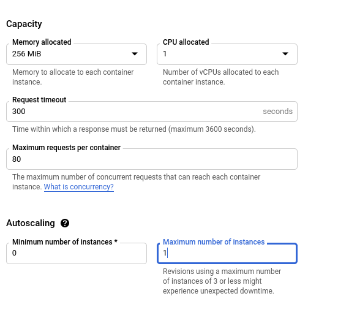
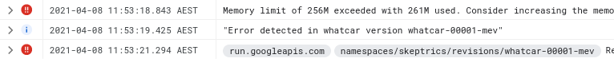

Machine Learning Serving on Google CloudRun
I sometimes build hobby machine learning APIs that I want to show off, like whatcar.xyz. Ideally I want these to be cheap and low maintenance; I want them to be available most of the time but I don’t want to spend much time or money maintaining them and I can have many of them running at the same time. My current solution is Cloud Compute (e.g. Digital Ocean or Linode) which has low fixed costs (around $5 per month). Unfortunately once every couple of months it goes down; so I have to monitor it and get the server running again (which can take me a few days to get to if I’m busy). I’ve looked at switching to a hosted Application Platforms like Heroku, Digital Ocean App Platform and Google App Engine; but they’re quite a bit more expensive, and not worth it for hobby projects. There are also Hosted Kubernetes solutions but they’re also more expensive and require learning a bunch of Kubernetes. Google Cloud Run is a recent alternative which seems to be the best of all worlds - runs off of containers, has minuscule costs for low traffic applications, and handles all the operations for you. The only downside is the maximum cost is quite large, and it has to be managed.
| Service | Min Cost | Max Cost | Operation | Management |
|---|---|---|---|---|
| Cloud Compute | Low | Low | Medium | Low |
| App Platforms | Medium | Medium | Low | Low |
| Hosted Kubernetes | Medium | High | High | Medium |
| Google Cloud Run | Tiny | Astronomical | Low | Medium |
Google Cloud Run is a managed Knative which will manage scaling and running containers, down to zero (which is perfect if you don’t get much traffic). Each container must run a webserver, in Python you could use FastAPI or Flask to manage the requests, and it can serve a configurable number of concurrent requests. You can configure the memory (up to 8GB) and the CPUs (up to 4), scale from 0 to 1000 instances and only get charged for the containers that are running (to the nearest 100ms), and the pricing is reasonable. The main limitation is that the service must not have any local mutable state; state needs to be managed in an external database or object store. This is very convenient for Machine Learning Inference, which tend to have complex dependencies (which can be handled with containers), moderate memory requirements and no state.
There may be some other alternatives; there are machine learning specific platforms with inference like AWS Sagemaker and Google’s AI Platform, but they tend to try to force you into a certain way of doing things and it’s hard to go outside their supported tools (although it’s possible with Sagemaker to use a custom Docker container). AWS Lambda recently announced container support which makes it much easier to deploy machine learning endpoints, but it requires a bit more work to set up (I’d be interested in how the costs and performance compares).
This article will explore how I migrated whatcar.xyz to Google Cloud Run, while trying to manage the risk of costs.
Costs
One of the issues with big cloud vendors is it’s really difficult to ascertain costs, because they break it down into lots of small fees for a variety of services. There’s also a real risk of costs spiralling out of control, like the story of spending $72,000 in a couple of days with firebase and cloud run.
Google Cloud Run’s pricing is in the ridiculous units of dollars per vCPU second and GiB second; I find these really hard to process until I change the unit. At the time of writing the Tier 1 pricing is:
- $2 per vCPU-day, with the first 2 vCPU-days free per month
- $0.22 per GiB-day, with the first 4 GiB-days free per month
- $0.40 per million requests, with the first 2 million requests free per month
There’s also network egress costs; the worst case is in Australia where it’s $0.19/GB (with free 1GiB within North America). Another incidental cost is logging ingestion: $0.50/GiB (First 50GiB per project free) There are also some minor incidental costs for storing the image and such, but they are relatively controllable.
The largest risk here is scaling; you could scale up to 1000 instances which could very quickly burn money for CPU and Memory. The easiest solution is to limit the maximum number of instances; with one instance the worst case scenario is just under $70 per month running full time.
The next biggest risk is requests and network; if someone hits my endpoint lots how much could it cost? Requests will also spawn log lines and network egress; if I assume my payload is about 1 kB and each request generates 100B of logs the total cost is about $0.64 per million requests.
You can configure the maximum number of concurrent requests per container; the default is 80. Assuming each request is handled in 250ms on average, this means the most requests it could handle is around 1 million per hour. So if someone drowned the endpoint in requests all month it would cost about $460 per month per available container.
These scenarios are quite unlikely - but it’s good to know I don’t think I could get charged thousands of dollars if something goes terribly wrong. In practice my current server has sees well under 5,000 requests per month. Even if each request keeps a container alive for a minute, this would be around 3.5 days of running, which with 1 vCPU and 1 GiB per instance would cost me about $0.66 per month. This is the real cost benefit of Cloud Run; for a barely used API it costs at most cents each month.
Billing Alerts
One tool Google Cloud Platform provides is Budget Alerts, under Billing. You can set it to send you an email when your bill reaches a certain value. The downside is it takes some time for them to process costs, and in the event of intense traffic you may not get alerted until you’re way over your budget.
It makes sense to set up a billing alert with a reasonable budget for when you’re slowly using more than you intend, with the idea that you’ll get notified within a day or two.
Monitoring and Alerting
For shorter term odd behaviour you can use Google Cloud’s Monitoring. There are metrics for Cloud Run such as container/billable_instance_time for the total billable time of containers, or request_count for the number of requests. These are updated every 180s so you can see what’s happening relatively quickly.
You can set alerts on these, but it’s not immediately obvious to me what levels I want to set (or even whether I want to use rates or totals). I’ve made a little dashboard showing these metrics and will set some alerts when I’ve got a better idea of what normal looks like.

Setting up an API endpoint with Google Cloud Run
Creating the Container
Google Cloud documentation has good instructions on building and deploying a Python container. I already had my project configured as a Docker container, so I just had to set the port using an environment variable as in the example. In my case I had an endpoint for collecting annotations which relied on writing to local disk. While I could change this to write files to a blob store such as Google Cloud Store (with the label in the filename), I haven’t used it for a while so I just deleted it to make the application stateless.
Instead of using Google Cloud Build I decided to directly upload to the container registry. I had to go through a little configuration in the web UI before I could get it working.
docker build . -name myproject
docker tag myproject gcr.io/{PROJECT_ID}/myproject
docker push gcr.io/{PROJECT_ID}/myprojectThe push took me several minutes to upload the image. Note that whether you use the container registry of cloud it will create artifacts in a Google Cloud Storage bucket, and the container images can be quite large. Make sure you delete these, or apply lifecycle rules, if you really want to keep costs down.
Deploying in Cloud Run
In Cloud Run I could set a new service, pick the region, and select the image I had pushed to the container registry.
Importantly to manage cost risk, in step 2 (Configure this service’s first revision) go to Advanced Settings. In Advanced Settings under Autoscaling set the Maximum Number of Instances to something much lower than the default of 100.

Once you’re through the wizard in a few minutes the application will start.
Accessing the endpoint
Once you’ve got the Service set up there’s a URL you can test it from, listed near the top of the dashboard (mine ended in run.app). But you can do better; with a Custom Domain Mapping you can set it to run on any domain or subdomain you own. If you click on the information button next to the URL, and click on Manage Domains. Then you can “Add Mapping”.
You may have to verify your domains in Webmasters Central; in my case it was a matter of setting a TXT DNS record and waiting patiently for it to update. Once that’s done you can finish adding the mapping and complete adding the list of DNS records they tell you to update. It takes some time for these changes to propagate, so I left my old server running for a couple of days. The best thing is it even comes with SSL.
Handling issues
I quickly hit an error where the cloud instance ran out of memory. The issue was pretty prominent in the Google Cloud Console, and the logs were very clear.

All I had to do was increase the memory available to the instances, because the model takes up a large amound of memory.
Summary
Google Cloud Run seems to be a really nice way to run hobby Machine Learning APIs and stateless websites requiring compute (and of course state could be managed through an external data store like Google Firebase or an SQL Database). Configuration is manageable, for low usage it’s crazy cheap and it just works even handling mapping to your own (sub)domains. The only downside is managing the risk of costs blowing out if something goes wrong, but with a bit of configuration it seems manageable.